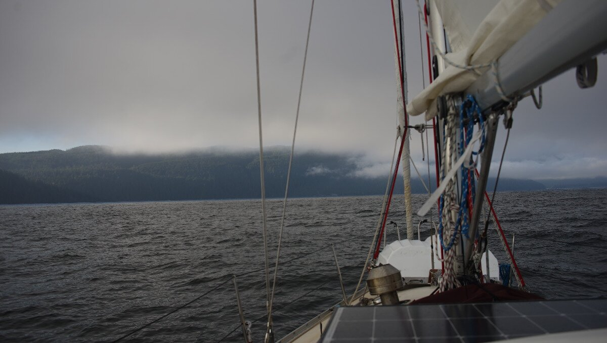
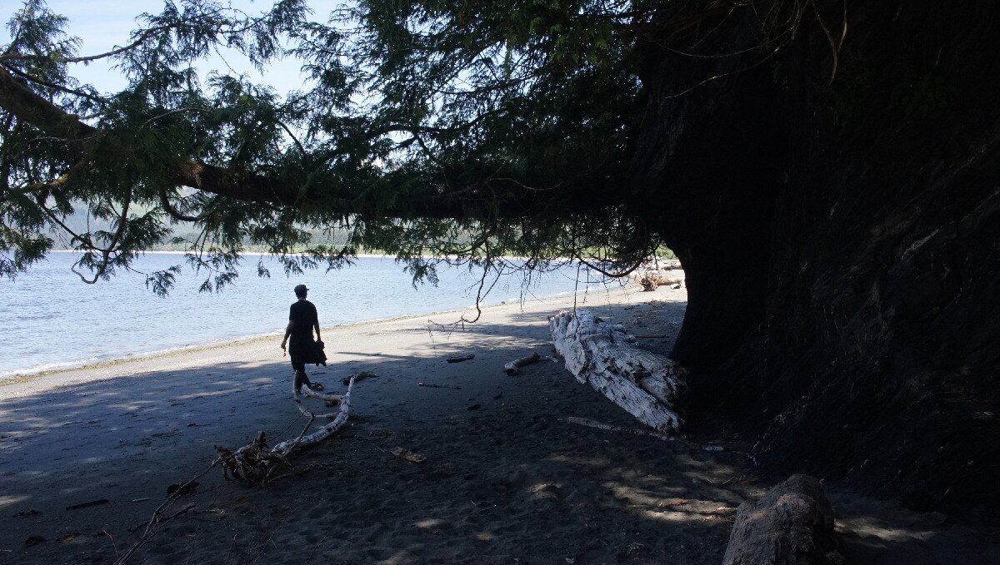
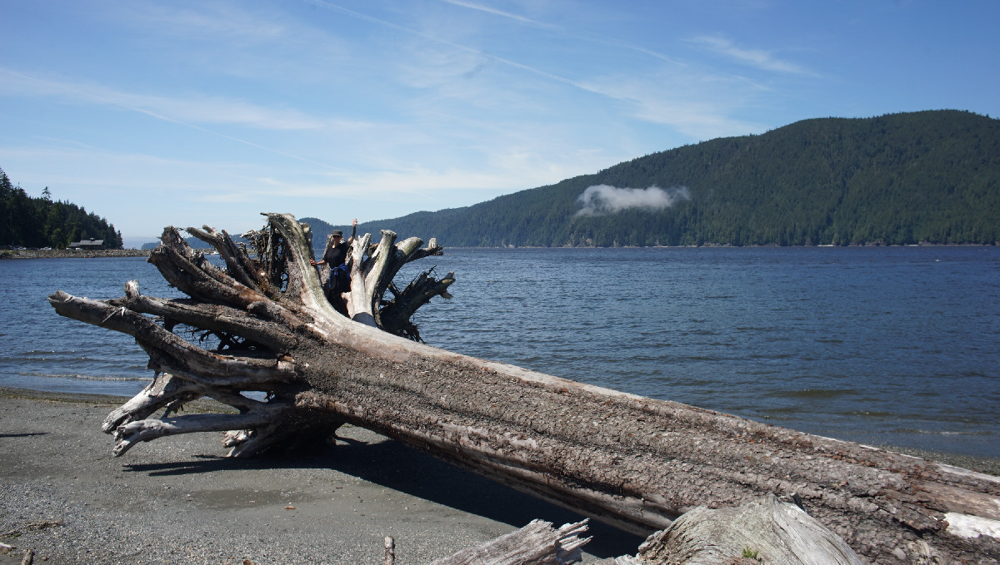
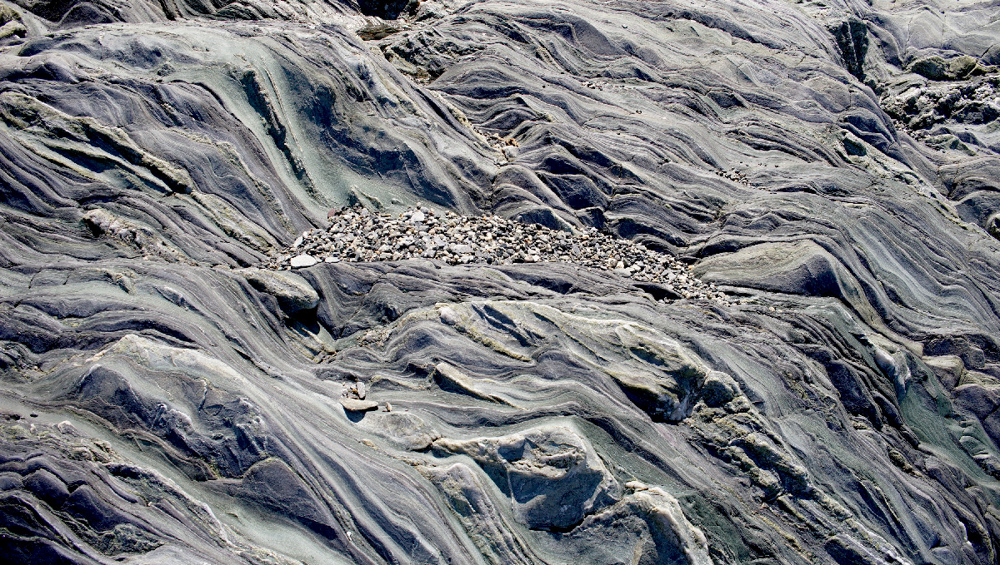
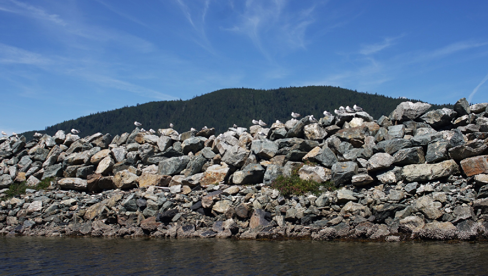

port san juan
Note. Land acknowledgments to follow.
On July 5th we sailed from Becher Bay to Port Renfrew(Port San Juan). We left at 0500 and arrived at 0730. We left with a helpful current which permitted for some good windward progress, but the wind was still a bit strong that morning and so wind against current created some pretty gnarly waves. At this point we considered anchoring in Sooke, if ever the waves stayed as they were. We sailed into the wind through the strait, once past Sooke the waves diminished and so we continued our sail westward. We saw 3 orcas during our sail, they surfaced near us in a group to say hello.
Sailing into the wind greatly lenghtens time spent on the water, and so inevitably later the tide turned and sailing into wind was much more difficult. By then the wind had lessened considerably too, so we motor-sailed into the wind. Pino doesn't motor well into weak winds, especially with a slight current running, but motor-aided sailing allows for decent progress. Eventually, the wind picked up again, permitting for more sailing.
After a tack to port, as I was reeling in the jib sheet I noticed that it was too easy to pull, the reason it was easy was because the bowline had come undone from the clew of the sail. The jib sheet was flailing hard into the wind. Then, a clip we left on the clew to make it easier to tie on the end of the whisker pole(short story: the end spring is broken so we had to jury rig an attachment point to keep using the pole) suddenly caught onto the baby stay, clipping itself in. "WOW. What are the chances?!" We both said aloud, astonished, quickly followed by "SHIT" because the motion was becoming very violent. Devine pointed Pino into the wind as I went to the bow to remove the clip and to tie the jib sheet back on. This was a good lesson, to check on your knots often. In 9 years of sailing our knots have never come undone like this, and we re-tie them every season. Putting the clip on the clew was a bad idea, we've since removed it. After resolving the jib sheet issue, we continued to beat into the wind.
The wind died 10 NM away from Port Renfrew. The rest of the ride there was long and boring, we sang songs and took turns at the tiller, fighting sleep all the while. We didn't see many boats on the water that day, 2 sailboats headed east and 1 headed west. We motored into the ever-lessening waves all the way to Thrasher Cove on the northwest side of the inlet.
Thrasher Cove. We arrived there at 0730, just as a fog bank that had been lingering along the northern shore of the anchorage dissipated. The weather outside of the south end of Vancouver Island was pretty calm that evening and the next morning, so there weren't many sea swells and little wind. All of Port San Juan is very open for anchoring. We tucked in near the shore in Thrasher Cove, which is really more a slight indent in the land than a cove, and dropped anchor in 30 ft at high water. There were a few crab traps, but not enough to restrict anchoring(we read that sometimes the cove is full of them, making it impossible to anchor).
We saw many tents laid up ashore. The wind that evening did not reach us, but the boat rolled a bit with a swell coming out of the south. The next morning, the inlet was still calm.
Pacific Gateway Marina. We lifted anchor at 0930 and headed to Pacific Gateway Marina after we learned they had room on their dock. When we left a wind was building into the inlet, lightly disturbing the little cove where we'd been anchored. The marina charges about 1.92 per ft, there is no power or water here, but there's a pub ashore, a small cafe and many trails.
We went for an exploratory walk ashore onto a nearby beach around 1300-1400, by then the wind in the inlet had built up (15-20 W West Entrance, and 15-25 NW Van Island South). The beach was full of driftwood, entire trees laying in the sand, roots and all.
We saw beautiful patterns in the rock here. They are so beautiful that we are going to share all 3 photos here for your enjoyment.
On our way back to the boat we said hi to a few good friends
